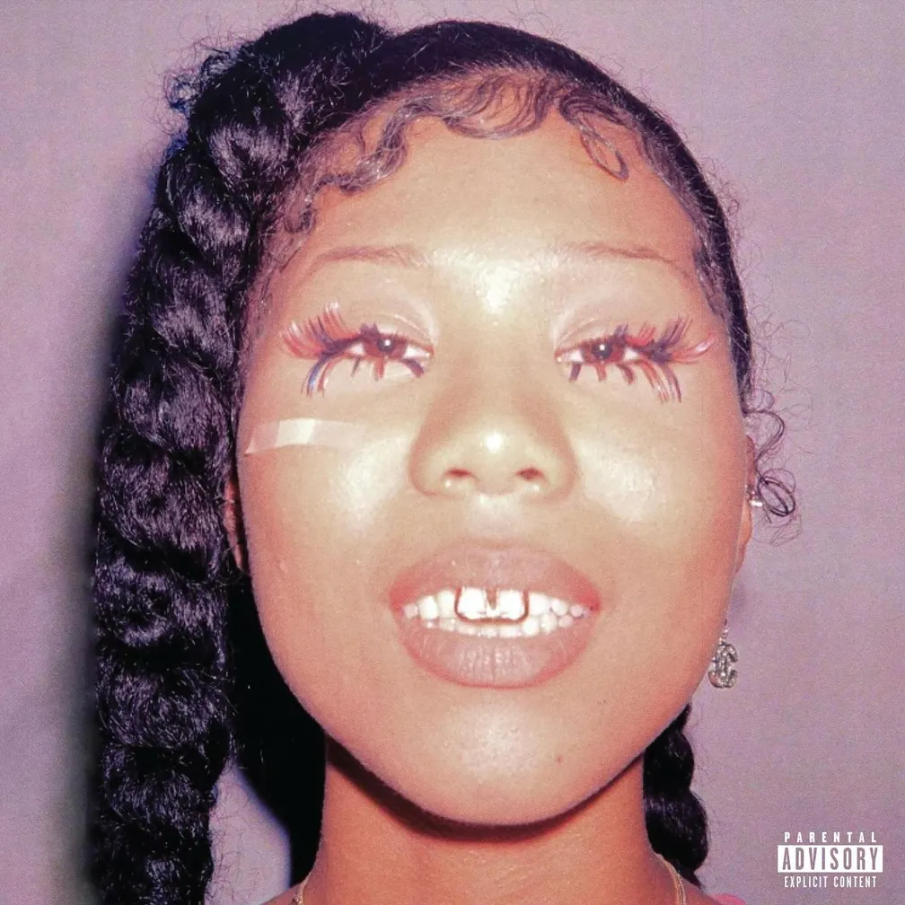

Her Loss
"O topo do mundo nunca foi tão implacável. Eles venceram, o prejuízo é dela."

Esqueça a melancolia e os pedidos de desculpas.
Em Her Loss, Drake e 21 Savage unem forças para entregar um dos projetos mais provocativos, ácidos e ostensivos do rap moderno.
O álbum colaborativo é uma celebração sem filtros do poder, da riqueza e do sucesso absoluto, onde a química impecável entre o deboche afiado do canadense e a agressividade fria das ruas de Atlanta atinge o ápice.
O Álbum
Lançado em novembro de 2022, Her Loss é um álbum colaborativo de hip-hop e trap de Drake e 21 Savage que nasceu do sucesso da parceria anterior da dupla em Jimmy Cooks. O projeto combina o estilo melódico e debochado de Drake com a crueza de 21 Savage ao longo de 16 faixas, contando com Travis Scott como único convidado na música Pussy & Millions. Entre os principais destaques musicais estão o megahit Rich Flex, Spin Bout U, Circo Loco (que usa sample de Daft Punk) e a faixa solo de Drake Middle of the Ocean. O disco também se destacou por uma campanha de marketing irônica e fictícia que simulava entrevistas falsas e capas de revista como a Vogue. Apesar de estrear no topo da Billboard 200, o álbum dividiu a crítica devido a letras polêmicas e indiretas agressivas a outras figuras da indústria, consolidando-se, no entanto, como um dos maiores sucessos comerciais do rap recente.
Faixas em Destaque
Spin Bout U
Drake & 21 Savage
"I got feelings for you. Hope you ain't lovin' the crew"
Hours In Silence
Drake & 21 Savage
"Your funeral is finna have like ten caskets on display"
Circo Loco
Drake & 21 Savage
This bitch lie 'bout gettin shots, but she still a stallion"